Reproducing the Degree of Spatial Interpretability (DSI)
A complete walkthrough of the degree of spatial interpretability
(DSI) and its local extension, the degree of geocomplexity (DG) — measuring how much of the
spatial structure in the data a prediction model actually explains rather than passes through
into its residuals — from raw data to manuscript.
R/ pipeline scripts · config/project-config.R ·
data/reference/dsi-paper-demo-dataset.csv (the paper's demo data) ·
tests/ verification · run-all.R — unzip, then run
Rscript run-all.R test from the DSI/ folder root.
Upload a CSV (location, dependent variable, predictors, and one error
column per model), press Compute, and download the DSI table and figures. The app ships with
this tutorial's simulated multi-model example data; all computation stays on your device.
To cite the DSI and DG models and their R packages and codes in publications, please use:
Liu H, Song Y, Yi W (2026). Degree of spatial interpretability.
IJGIS.
doi ·
PDF
Liu H, Song Y, Yi W, Zhang P (2026). Degree of geocomplexity for
diagnosing spatial pattern loss beyond prediction accuracy. GIScience & Remote
Sensing 63(1):2657087.
doi ·
PDF
Zhang Z, Song Y, Luo P, Wu P (2023). Geocomplexity explains spatial
errors. IJGIS 37(7):1449–1469.
doi ·
PDF
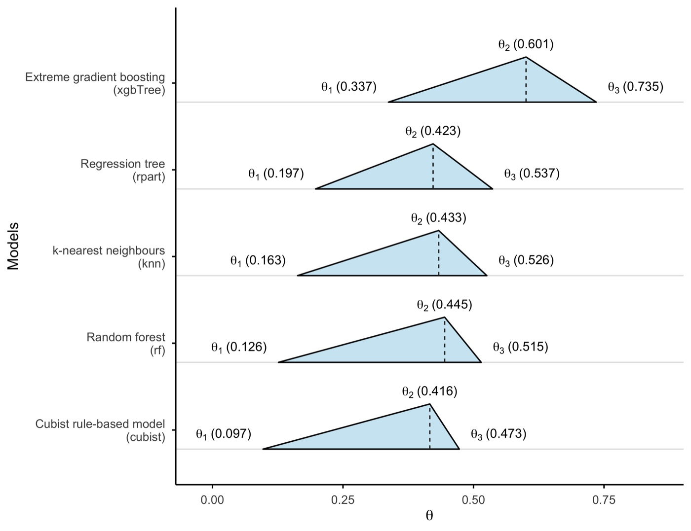
1 Method Overview & Reproduction Scope
1.1 Core Idea
Conventional model validation asks how accurate a model is — R², RMSE, MAE. The
degree of spatial interpretability (DSI) asks a different question that accuracy metrics
cannot answer: how much of the spatial structure present in the data has the model actually
explained, rather than passed through into its residuals? A model can lower its errors by
smoothing toward the local mean while leaving the spatial arrangement of those errors intact —
high accuracy, low spatial interpretability.
The idea rests on a principle from spatial statistics: any spatial structure in the response
that a model fails to capture is transferred to its residuals. Measuring a spatial
characteristic on the response field and again on the residual field, the relative decrease
tells you how much the model absorbed. DSI turns that into a number; its local extension, the
degree of geocomplexity (DG), turns it into a map.
Research problem: model selection for spatial prediction is dominated by accuracy
metrics that treat model error as spatially uniform, so a model that reproduces the
spatial structure of the response and a model that merely interpolates it are scored
alike.
One-line contribution: DSI measures the residual-based attenuation of spatial
autocorrelation (Moran's I) and spatial heterogeneity (geographical-detector Q) from the
response to each model's residuals, combines them into a θ range per model, and — via
DG — localises the same attenuation logic point by point.
Why it matters: applied to a set of competing models, accuracy and DSI often
select different winners; in the demo below the best-R² model (random forest)
ranks only fourth of five on θmax, while xgbTree leads
interpretability.
◆Reader anchor
Models in a domain are selected on accuracy → accuracy cannot see whether a model
reproduces spatial structure → DSI measures exactly that → applied to a set of models, the
two criteria often select different models → therefore selection should weigh both.
Everything on this page serves that line.
✓What you need
R 4.1+ with three required packages (sf, spdep,
rpart), the folder from the download button above, and about ten minutes.
Optional packages add more models and the DG maps. No internet, no API keys, no paid
software; the full demo runs in about 6 seconds.
1.2 Method Logic
DSI is built from three measurements, each applied twice — once to the response field, once
to a model's residual field. Two are global (autocorrelation, heterogeneity); one is local
(geocomplexity, used by DG). The method composes four earlier building blocks:
Moran's I 1950global spatial autocorrelation of a field Moran, Biometrikacited
→
GD 2010geographical detector: Q value of spatial heterogeneity Wang et al., IJGIScited
DSI 2026residual-based attenuation η per characteristic, combined into θ Liu et al., IJGIS · PDF
→
DG 2026the same attenuation localised: a map of where structure is explained Liu et al., GISci RS · PDF
Published reference · DSI
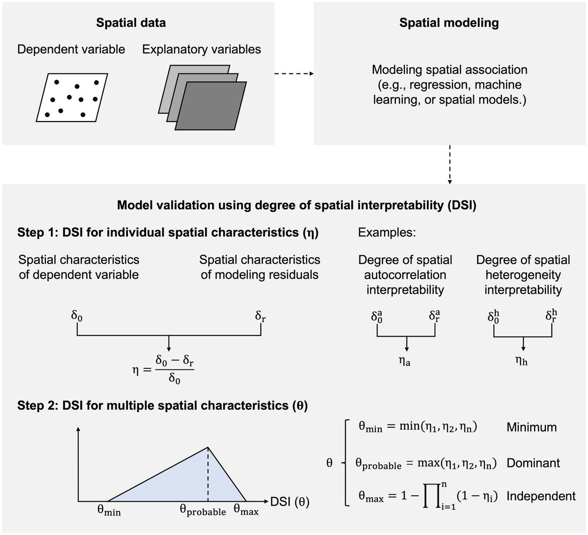
DSI paper Fig. 1 — the calculation process. Spatial characteristics of the
dependent variable (δ₀) and of the modelling residuals (δr) are compared to obtain
η for each characteristic, then combined into the θ range.
Liu, Song & Yi (2026), IJGIS.
Key concepts and equations
Three equations drive the whole pipeline:
Individual characteristic η (Eq. 1):
η = ( δ₀ − δr ) / δ₀
δ₀ is the characteristic measured on the dependent variable; δr the same
characteristic on the residuals. η → 1 means the residual field keeps almost none
of the structure (the model absorbed it); η = 0 means it absorbed none;
η < 0 means the model amplified structure that was not in the data.
Autocorrelation is measured by Moran's I (KNN weights, projected CRS in metres);
heterogeneity by the geographical-detector Q statistic, with strata cut from the
predictors — Wang et al. (2010)
doi.
Across several characteristics the result is a range, not a single number:
θmin reads the components as shared, θmax as independent
contributions. The width between them is itself diagnostic — narrow means the model
treats the characteristics alike; wide means it is strong on one and weak on another —
Liu, Song & Yi (2026) PDF.
Local extension DG (Eq. 3):
DGi = ( G0,i − Gr,i ) / G0,i
G is the geocomplexity of Zhang et al. (2023)
(PDF), computed at every location on the response
and on each residual field. DG answers where a model explains local structure — the
basis for a map of which model is locally best. The ratio is unbounded and heavy-tailed
(G in the denominator), so summaries report the median alongside the mean —
Liu et al. (2026) PDF.
1.3 Reproduction Scope
Everything tagged Demo run on this page regenerates from the scripts and data in this
folder; everything tagged Published reference is shown as a static comparison image or
table from the two source articles. The demo runs end to end with R 4.6.0, and
the built-in test reproduces every published value of the DSI paper's Table 3
(row lm) within 0.005.
Item
Demo template
Published reference
Data
1,024 synthetic grid points, 6 predictors
(data/derived/analysis-data.csv, seed 42) + the paper's own
586-point demo dataset (data/reference/)
DSI: 115,083 Australian plant-diversity plots aggregated to 1,958 0.5° grid
cells · DG: tree biomass of eastern Australia
Tables
results/accuracy-metrics.csv, results/dsi-metrics.csv,
results/dg-summary.csv and the sensitivity summaries, regenerated by
the scripts
DSI Table 3, reproduced value-by-value by run-all.R test and
shown beside the demo tables in §3.2–§3.3
Figures
fig01–fig11 PDFs and PNGs regenerated by R/p01–p06 (web copies in
assets/)
DSI Figs 1 and 6 and DG Fig 8, embedded as static reference
images
What the template regenerates versus what is shown as published reference.
Published applications of this exact method
Application
Spatial unit
Response
Models
Status
Plant-diversity prediction, Australia (Liu, Song & Yi 2026, DSI — reference
values on this page)
0.5°×0.5° grid cell (1,958)
Species richness
10 regression / machine-learning models
Published (IJGIS)
Tree-biomass prediction, eastern Australia (Liu et al. 2026, DG — reference
figures on this page)
Sample plot
Above-ground biomass
Model set scored by local DG
Published (GISci RS)
Synthetic demonstration (this page — all demo outputs)
1,024 grid points
Simulated response y with planted structure
5 models (9 configured; 4 skipped without their packages)
Reproducible demo
Two published applications share the method; the synthetic demo makes it
reproducible without external data.
How to use this page
To reproduce the demo: this folder already contains everything — the R scripts
(R/), the configuration (config/project-config.R), the paper's
demo dataset (data/reference/), and the verification tests
(tests/). Run Rscript run-all.R test, then
Rscript run-all.R; every expected output is shown on this page so you can
verify each step.
To apply DSI to your own problem: read §2.3 (data contract), point
INPUT_FILE in the §2.2 config at your CSV, then run the same scripts
unchanged (§4.1).
To write the paper: §4.2 gives the section skeleton pre-structured for a DSI
application and two worked writing examples with the demo numbers filled in.
2 Setup, Structure & Data Contract
2.1 Environment & Dependencies
The pipeline is pure R and runs from one entry point. Required packages stop the run if
missing; optional packages only disable the model or module that needs them, and the pipeline
reports what it skipped — so a run always produces output. Install everything from the R
console:
R console
# Required — the pipeline stops without these
install.packages(c("sf", "spdep", "rpart"))
# Optional — the local DG module and the figures
install.packages(c("geocomplexity", "ggplot2", "scales", "patchwork"))
# Optional — the full model set of the demo configuration
install.packages(c("ranger", "xgboost", "Cubist", "FNN",
"pls", "earth", "kernlab", "gbm"))
Package
Role in the pipeline
Required?
sf, spdep
projected coordinates, KNN weights, Moran's I (Step 3)
yes
rpart
regression-tree strata for the Q value (Step 3)
yes
geocomplexity
local geocomplexity Gi for the DG module (Step 4)
DG only
ranger, xgboost, Cubist, FNN
rf, xgbTree, cubist, knn models (Step 2)
per model
pls, earth, kernlab, gbm
pls, earth, svmRadial, gbm — the rest of the published model set
per model
ggplot2, scales, patchwork
figures (R/p01–p06)
figures only
Package roles. Models whose package is missing are skipped with a console
message, never a failure — the run below fits 5 of the 9 configured models.
!System libraries for sf
sf needs GDAL, GEOS and PROJ. On macOS:
brew install gdal geos proj. On Debian/Ubuntu:
apt install libgdal-dev libgeos-dev libproj-dev libudunits2-dev. The complete
environment is recorded in env/session-info.txt; package
install commands live in env/requirements.md.
2.2 Project Structure & Configuration
One entry script drives everything: run-all.R runs the six pipeline steps, the
six figure scripts, or the verification tests, and every step writes to
data/derived/, results/, tables/ and figs/.
Each step reads what the previous one wrote, so a single step can be re-run after a config
change without repeating the whole pipeline. Deleting the four output folders and re-running
regenerates everything shown on this page.
folder tree
DSI/
├── dsi.html # this guide
├── run-all.R # entry point: full run, single steps, figures, test
├── assets/ # figures shown in this guide (web copies)
├── config/project-config.R # the ONLY file to edit for a new domain
├── R/
│ ├── 00-config.R … 05-models.R # library layer: config, helpers, metrics,
│ │ # DSI, DG, model registry
│ ├── 09-make-synthetic-data.R # built-in demo generator (INPUT_FILE = NULL)
│ ├── 10 … 60 # pipeline: data, models, DSI, DG,
│ │ # sensitivity, tables
│ └── p01 … p06 # figure scripts
├── data/
│ ├── raw/ # your input CSV goes here
│ ├── reference/ # the DSI paper's demo dataset + original code
│ └── derived/ # generated: analysis data, split, residuals
├── tests/ # test-01 reproduces the published values;
│ # test-02 checks 17 metric properties
├── env/ # requirements.md, session-info.txt
├── results/ tables/ figs/ # generated output, never hand-edited
Main configuration file
config/project-config.R (key lines)
INPUT_FILE <- NULL # NULL = synthetic demo; else "data/raw/your.csv"
RESPONSE <- "y" # name of the dependent-variable column
PREDICTORS <- NULL # NULL = every column except lon/lat/response
DATA_CRS <- 4326 # CRS of the lon/lat columns
PROJECTED_CRS <- 3577 # a projected CRS in METRES (not degrees!)
K_MORAN <- 8 # KNN neighbours for Moran's I (6-10 dense, 10-20 sparse)
K_GEOC <- 18 # neighbourhood for geocomplexity (DG)
K_SENSITIVITY <- c(6, 8, 10, 14, 18, 22) # k values re-run in Step 5
STRATIFY_METHOD <- "tree" # "tree" (paper) or "kmeans" — never the response
MODELS <- c("rpart","rf","xgbTree","cubist","knn",
"pls","earth","svmRadial","gbm")
TRAIN_FRACTION <- 0.7 # 70/30 split, as in both papers
SEED <- 42
✓Single adaptation point
The config is the only file to edit when porting the pipeline to a new domain — no R
script hard-codes variable names, coordinates, or parameters. When writing the manuscript,
quote parameter values from this file, never from memory.
Key parameters and where they come from
Parameter
Default
Origin / rationale
K_MORAN
8
KNN weights for Moran's I; the DSI paper used k = 8 for its 0.5° Australian grid; sensitivity in Step 5
K_GEOC
18
geocomplexity neighbourhood of the DG paper; must be large enough that neighbours share neighbours
STRATIFY_METHOD
tree
a regression tree on the predictors defines the Q-value strata, reproducing the DSI paper; "kmeans" is the Step 5 alternative
TRAIN_FRACTION, SEED
0.7, 42
stratified 70/30 split; residuals are always computed on the held-out 30%
MODELS
9 names
the demo model set; entries without their package are skipped with a message
Free parameters, their defaults, and the published rules they follow.
2.3 Data Contract
The pipeline consumes one table, one row per sampling location. Everything except the
coordinates and the response is treated as a predictor — used both to fit models and to define
the Q-value strata. Units can be anything point-referenced: grid cells (DSI application),
sample plots (DG application), stations, polygon centroids.
Column
Config key
Type
Meaning
Required?
lon, lat
DATA_CRS
numeric
coordinates, in the CRS you declare (demo: EPSG:4326)
yes
y
RESPONSE
numeric
the dependent variable
yes
predictors
PREDICTORS / DROP_COLS
numeric
every remaining column unless listed in DROP_COLS
yes
Required schema of the input table. Column names are free — they are declared in
the config, not hard-coded.
Example analysis-ready table
lon
lat
y
temperature
precipitation
elevation
soil_ph
distance_km
noise_var
114.00
−39.00
12.512
24.956
555.82
260.16
6.576
120.60
−1.825
115.29
−39.00
11.218
23.490
593.68
303.25
6.518
113.75
1.420
116.58
−39.00
10.987
23.692
541.58
366.64
6.818
176.09
0.724
First rows of data/derived/analysis-data.csv, produced by
Step 1. 1,024 rows total; your own data takes exactly this shape — coordinates, a
response, and predictor columns.
!Predictors define the strata, so choose them deliberately
The Q statistic partitions space using the predictors. An identifier column left in by
accident (a plot ID, a date) will be treated as a covariate and will partition space — put
such columns in DROP_COLS. Dropping a predictor for collinearity also changes
the strata, so make that decision before the analysis and report it in the paper.
The generator behind the demo (or: how to build a controlled test)
When INPUT_FILE is NULL, the pipeline builds a synthetic field with
known structure — a smooth autocorrelated component, a three-region regime term, and a
spatially correlated error. Because the truth is known, a model that recovers it should score
high DSI and a model that ignores space should not. The same generator is the starting point
for the simulation section of a methods paper.
R/09-make-synthetic-data.R (excerpt)
# Smooth spatial field from an exponential covariance (autocorrelation)
smooth_field <- function(range_km, sd = 1) {
covm <- sd^2 * exp(-d_km / range_km)
L <- chol(covm + diag(1e-6, n))
as.numeric(t(L) %*% rnorm(n))
}
# Regime term: three east-west bands (heterogeneity -> picked up by Q)
regime_effect <- c(-4, 0, 5)[cut(grid$lon, breaks = 3, labels = FALSE)]
# Spatially correlated error, so a good aspatial fit still leaves structure
spatial_error <- 2.2 * smooth_field(range_km * 0.5, 1)
y <- 12 + 0.9*(temperature - mean(temperature)) + 1.5*(soil_ph - mean(soil_ph)) +
regime_effect + spatial_error + rnorm(n, sd = 1)
3 Reproduction Pipeline, Results & Validation
3.1 Pipeline Execution
Six pipeline steps, six figure scripts and two verification tests run from one entry point.
Each step writes to data/derived/, results/, tables/ or
figs/ and reads what the previous step wrote, so any step can be re-run in
isolation after a config change.
Full run
Rscript run-all.R (~6 s on demo data)
Verification
Rscript run-all.R test — do this first
Output folders
results/ tables/ figs/ data/derived/
terminal
cd DSI # this folder
Rscript run-all.R test # 1. verify the implementation reproduces the paper
Rscript run-all.R # 2. full pipeline on the built-in synthetic data
Rscript run-all.R 30 40 # re-run single steps (10 20 30 40 50 60)
Rscript run-all.R figures # only the figure scripts
Project : dsi-demo
Domain : synthetic demonstration
== Step 1/6 Prepare data ======================================
INPUT_FILE is NULL; generating the synthetic demonstration dataset
analysis set: 1024 points, 6 predictors
== Step 2/6 Fit models and extract residuals ==================
stratified split: 714 training / 310 test (70% / 30%)
fitting 5 model(s): rpart, rf, xgbTree, cubist, knn
best R2: rf (0.366) | lowest RMSE: rf (4.122)
== Step 3/6 Compute DSI =======================================
Spearman rho between R2 and theta_probable: 0.800
accuracy and interpretability disagree: rf leads on R2, xgbTree on theta_probable
== Step 4/6 Compute DG ========================================
locally best model: xgbTree at 32.6% of points (101 of 310)
== Step 5/6 Sensitivity of DSI to measurement settings ========
DSI is stable across neighbourhood sizes (all changes below 5%).
== Step 6/6 Build manuscript tables ===========================
Finished in 6.3 s
Outputs: results/ tables/ figs/ data/derived/
3.2 Reproduce the Published Values
Before trusting any number on your own data, confirm the code reproduces the published
method. run-all.R test runs the template's metric functions on the demo dataset
released with the DSI paper (data/reference/dsi-paper-demo-dataset.csv, 586 test
points) and compares nine values against Table 3 (row lm) and
Figure 6 of Liu, Song & Yi (2026).
== test-01 Reproduce Liu et al. (2026) Table 3, row lm ==================
quantity published computed difference result
----------------------------------------------------------
delta_a_0 0.409 0.410 0.0012 pass
delta_h_0 0.513 0.513 0.0001 pass
theta_max 0.817 0.817 0.0003 pass
...
PASS — the template reproduces every published value within 0.005
== test-02 Metric properties ===========================================
pass a residual field with no structure gives eta = 1
pass an amplified residual field gives eta < 0
...
17 passed, 0 failed
Quantity
Published
Computed
Δ
Result
δa₀ — Moran's I of y
0.409
0.410
0.0012
pass
δar — Moran's I of residuals
0.189
0.190
0.0007
pass
δh₀ — Q of y
0.513
0.513
0.0001
pass
δhr — Q of residuals
0.203
0.203
0.0003
pass
ηa
0.538
0.538
0.0005
pass
ηh
0.604
0.605
0.0009
pass
θmin
0.538
0.538
0.0005
pass
θprobable
0.604
0.605
0.0009
pass
θmax
0.817
0.817
0.0003
pass
Published vs. recomputed — the DSI paper's demo dataset, linear model, 586 test
points. All nine values agree within 0.005; the 0.001-level gaps are rounding in the printed
table.
!The Q statistic has two forms; only one reproduces the paper
The geographical detector's Q can be written with within-stratum sample variances
or as one minus the ratio of within-stratum to total sum of squares. On the demo
response these give 0.490 vs 0.513. Only the sum-of-squares form matches the
published δh values, so that is what q_statistic() implements. The
reproduction test locks it: change the form and the test fails.
R/02-spatial-metrics.R — the Q statistic (sum-of-squares form)
q_statistic <- function(x, strata) {
strata <- as.factor(strata)
keep <- is.finite(x) & !is.na(strata)
x <- x[keep]; strata <- droplevels(strata[keep])
sst <- sum((x - mean(x))^2) # total sum of squares
if (sst <= 0) return(NA_real_)
ssw <- sum(vapply(split(x, strata), # within-stratum sum of squares
function(v) sum((v - mean(v))^2), numeric(1)))
1 - ssw / sst
}
✓Checkpoint
run-all.R test prints PASS with 17 passed, 0 failed. The
implementation is faithful to the published method — proceed to your own analysis. If the
test fails after you edit the metric code, the edit broke the method.
3.3 Core Analytical Steps
Five stages, each with the same anatomy: purpose → code → output → result →
how to read it. Steps are numbered 1–5 on this page while the script files keep their
own numbers (Step 1 runs R/10-prepare-data.R, Step 3 runs
R/30-compute-dsi.R, and so on) — R/00–05 is the shared library
layer.
Step 1
Prepare data — raw input → analysis-ready table
What this step does
Reads the input (or generates the synthetic demo when INPUT_FILE is
NULL), drops rows with missing coordinates/response and duplicate coordinates,
optionally log-transforms the response, reports predictor pairs with
|r| > 0.8 without acting on them, and writes
data/derived/analysis-data.csv. Everything downstream reads only the derived
file, so the raw data is never modified.
Code
terminal
Rscript run-all.R 10
Example output
== Step 1/6 Prepare data ======================================
INPUT_FILE is NULL; generating the synthetic demonstration dataset
1024 rows, 9 columns
response: y
6 predictor(s): temperature, precipitation, elevation, soil_ph, distance_km, noise_var
no predictor pair exceeds |r| = 0.8
wrote results/variable-summary.csv (7 rows)
wrote data/derived/analysis-data.csv (1024 rows)
analysis set: 1024 points, 6 predictors
Demo run
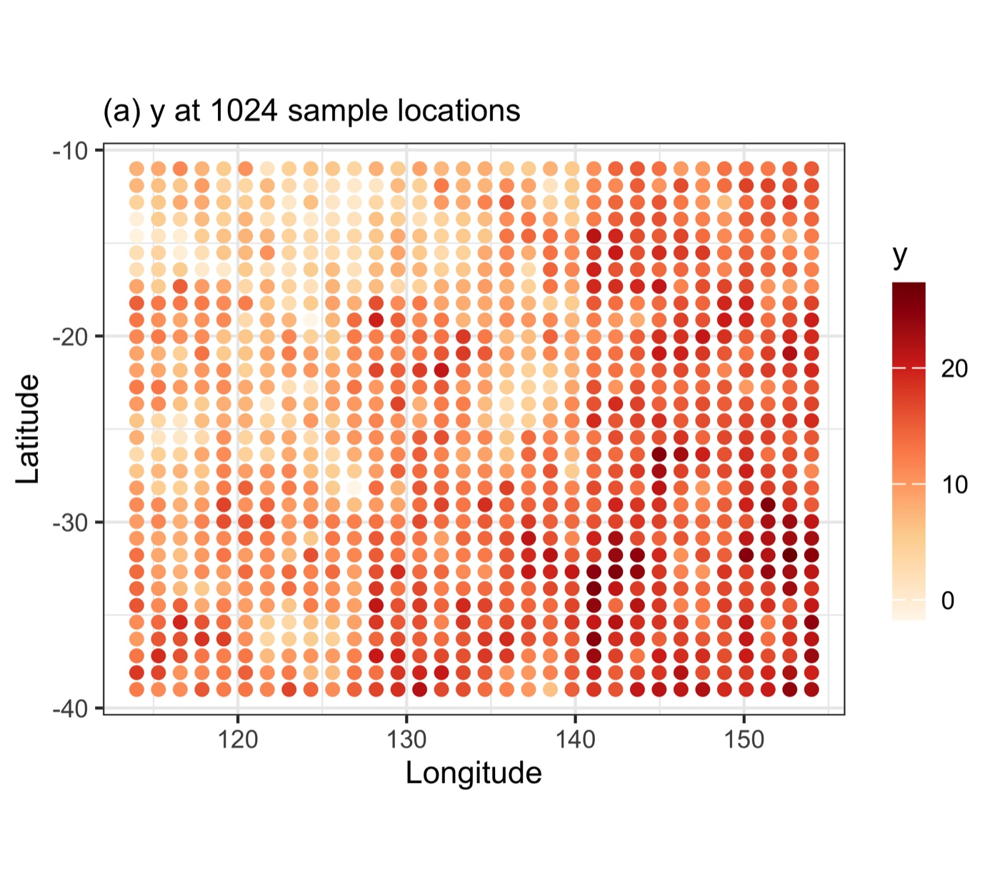
fig01a — the response y across 1,024 grid points. The east-west
colour gradient is the regime term; the local patchiness is the autocorrelated
component — both are structure a model should reproduce.
Paper reference
In Liu, Song & Yi (2026) this step aggregates 115,083 Australian plant-diversity
plots to 1,958 0.5°×0.5° grid cells (richness as the response, 19 abiotic predictors —
PDF). The synthetic demo mirrors that structure at
smaller scale so the pipeline runs without downloading the case data.
◆How to read this result
Confirm there is structure to explain. DSI is an attenuation ratio; if the
response carries no spatial pattern, every η is noise over noise. A visibly patchy
response map (like this one) is the precondition for the whole analysis.
Two kinds of structure, deliberately. The gradient (heterogeneity) is what
the Q statistic detects; the local clustering (autocorrelation) is what Moran's I
detects. A case that shows only one makes only one η interpretable.
Collinearity is reported, not fixed. The step flags |r| > 0.8
pairs so you decide; because dropping a predictor reshapes the Q-value
strata, that decision belongs in the manuscript, not in a silent default.
✓Checkpoint
data/derived/analysis-data.csv exists with 1,024 rows and 6 predictors,
and the console reports no predictor pair above |r| = 0.8, before you move
on.
Step 2
Fit models & accuracy — predictions, residuals, the conventional ranking
What this step does
Splits the data 70/30 by quantiles of the response, fits every available model from the
configured set, and computes residuals on the held-out test set. Accuracy (R², RMSE,
MAE) is the conventional ranking that DSI will be contrasted against.
!Residuals must come from held-out data
Training residuals of an overfitted model approach zero, which drives η toward a
spurious 1. Both the paper and this template evaluate on the test set; the split is
stratified so the test set keeps the response distribution and therefore a comparable
δ₀.
Code
terminal
Rscript run-all.R 20
Example output
== Step 2/6 Fit models and extract residuals ==================
stratified split: 714 training / 310 test (70% / 30%)
! skipped (package not installed): pls [pls], earth [earth], svmRadial [kernlab], gbm [gbm]
fitting 5 model(s): rpart, rf, xgbTree, cubist, knn
wrote data/derived/test-residuals.csv (310 rows)
wrote results/accuracy-metrics.csv (5 rows)
best R2: rf (0.366) | lowest RMSE: rf (4.122)
Model
R²
RMSE
MAE
rf
0.366
4.122
3.383
xgbTree
0.318
4.407
3.530
knn
0.309
4.320
3.557
cubist
0.309
4.355
3.479
rpart
0.217
4.779
3.879
results/accuracy-metrics.csv — 310 test points, ranked by R².
The conventional view; on its own it would send you to rf.
Demo run
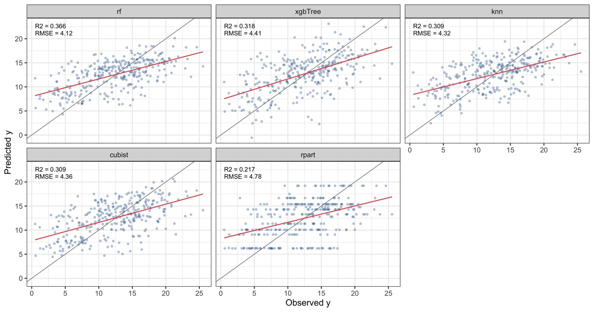
fig02 — observed vs. predicted on the test set, per model.
Paper reference
In the DSI paper's Australian case, rf and cubist achieved the
best accuracy (R² ≈ 0.48–0.49), with svmRadial, gbm,
gam, xgbTree close behind and earth,
lm, knn, pls weakest — a ranking the DSI analysis
then partly overturns (PDF).
◆How to read this result
This is the baseline you will challenge, not the answer. The accuracy table
establishes the conventional hierarchy; the entire point of DSI is to show that
hierarchy is incomplete.
Small R² gaps hide large behavioural differences. Four models sit within
0.31–0.37 R² — a reviewer would call them "comparable." Step 3 shows their
θmax ranges from 0.47 to 0.74, a difference accuracy cannot
see.
Deeper thinking: the modest R² (≈ 0.37) is expected when predictors
are purely abiotic and a spatially correlated error is present by construction —
exactly the regime where spatially structured residuals, and therefore DSI,
matter most.
✓Checkpoint
results/accuracy-metrics.csv holds 5 rows with rf best at
R² = 0.366; models with missing packages are listed as skipped, not
failed.
Step 3 · the core result
Compute DSI — degree of spatial interpretability per model
What this step does
Under one fixed set-up — the same neighbours, strata, and evaluation points for every
model — it measures Moran's I and the Q statistic on the response and on each residual
field, forms η for each characteristic (Eq. 1), and combines them into the θ range
(Eq. 2).
== Step 3/6 Compute DSI =======================================
Moran's I weights: 8-nearest neighbours, row-standardised, EPSG:3577
Q-value strata: tree method, 20 strata
wrote results/dsi-metrics.csv (5 rows)
No diagnostic flags raised.
wrote results/accuracy-vs-dsi.csv (5 rows)
Spearman rho between R2 and theta_probable: 0.800
accuracy and interpretability disagree: rf leads on R2, xgbTree on theta_probable
Model
δar
ηa
δhr
ηh
θmin
θprob
θmax
xgbTree
0.426
0.337
0.208
0.601
0.337
0.601
0.735
rpart
0.516
0.197
0.301
0.423
0.197
0.423
0.537
knn
0.538
0.163
0.296
0.433
0.163
0.433
0.526
rf
0.561
0.126
0.290
0.445
0.126
0.445
0.515
cubist
0.580
0.097
0.305
0.416
0.097
0.416
0.473
results/dsi-metrics.csv — δa₀ = 0.643,
δh₀ = 0.522 (shared by all models), ranked by
θmax.
Demo runfig03 — the θ triangle per model, built exactly like the paper's Fig 6:
base from θ₁ (θmin) to θ₃ (θmax), apex and dashed line at θ₂
(θprobable), best model on the top row. xgbTree
leads.Published reference · DSI
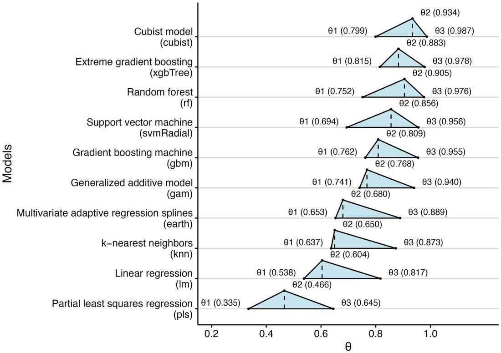
DSI paper Fig. 6 — the same figure in Liu et al. (2026), where
cubist leads (θ 0.799–0.987) — a direct visual template for the demo
panel.
Paper reference — Table 3 (all models)
Model
δar
ηa
δhr
ηh
cubist
0.027
0.934
0.103
0.799
rf
0.039
0.905
0.127
0.752
xgbTree
0.048
0.883
0.095
0.815
svmRadial
0.059
0.856
0.157
0.694
gbm
0.078
0.809
0.122
0.762
gam
0.095
0.768
0.133
0.741
earth
0.142
0.653
0.164
0.680
knn
0.143
0.650
0.186
0.637
lm
0.189
0.538
0.203
0.604
pls
0.272
0.335
0.274
0.466
Liu, Song & Yi (2026) Table 3 — δa₀ = 0.409,
δh₀ = 0.513 (shared). The lm row is the one
run-all.R test reproduces (PDF).
◆How to read this result
η is an attenuation, not an error. ηa = 0.337 for
xgbTree means it removed 34% of the response's autocorrelation from
its residuals; ηh = 0.601 means it removed 60% of the
heterogeneity. Higher is better.
Negative η is a finding, not a bug — watch for it.
η < 0 means residuals more spatially clustered than the
response: the model manufactures pattern, the typical signature of a global
linear or additive fit that cannot bend across a regime boundary. The pipeline
flags any negative η in results/dsi-diagnostics.txt (none occurs in
this five-model demo).
Read the two components, not just θ. A model can reach a respectable
θmax from one strong component and one weak one. xgbTree
here is far better on heterogeneity (0.60) than autocorrelation (0.34) — the wide
θ span (0.34→0.74) says so at a glance.
Demo vs paper — same logic, different winner. In the paper's real data
every tree/ensemble model reaches η > 0.75 and cubist
leads; on the harder synthetic case the absolute η are lower and
xgbTree leads. The ranking mechanism reproduces even when the
numbers differ, which is what a method port must demonstrate.
Deeper thinking: that rf (best accuracy) sits mid-table on θ
is the payload — it interpolates well within dense clusters yet leaves
neighbourhood-scale residual structure. Accuracy rewarded the interpolation; DSI
penalised the leftover structure.
✓Checkpoint
results/dsi-metrics.csv holds 5 rows; the console reports "No
diagnostic flags raised" and ρ(R², θprobable) = 0.800 with
rf and xgbTree as the divergent pair.
Step 4 · optional module
Compute DG — point-wise geocomplexity & the locally optimal model
What this step does
Computes local geocomplexity of the response and of each residual field at every test
location, forms DG point-by-point (Eq. 3), summarises the distribution, and assigns
each location the model with the highest local DG — producing a map that argues no single
model wins everywhere. Needs the geocomplexity package; set
RUN_DG <- FALSE to skip.
Code
terminal
Rscript run-all.R 40
Example output
== Step 4/6 Compute DG ========================================
geocomplexity neighbourhood: 18 nearest neighbours
wrote results/dg-pointwise.csv (1550 rows)
wrote results/dg-summary.csv (5 rows)
wrote results/dg-optimal-model.csv (310 rows)
locally best model: xgbTree at 32.6% of points (101 of 310)
5 model(s) are locally optimal somewhere
Model
Mean DG
Median DG
Share DG > 0
rpart
31.55
0.512
63.2%
xgbTree
22.36
0.504
64.8%
cubist
29.80
0.407
62.6%
knn
16.88
0.402
61.9%
rf
28.45
0.349
59.0%
results/dg-summary.csv — ranked by median DG; note the
heavy-tailed means.
Demo run
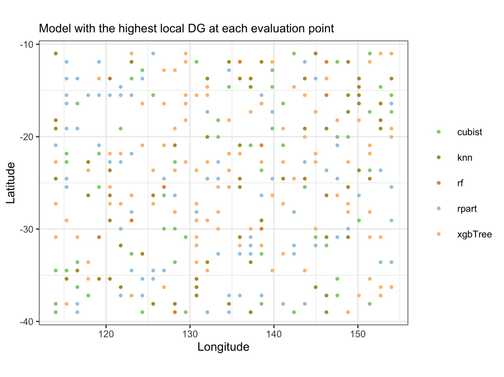
fig08 — the model with the highest local DG at each of 310 test points.
xgbTree is locally best at 33% of points, but all five models win
somewhere — no single model dominates the map.Published reference · DG
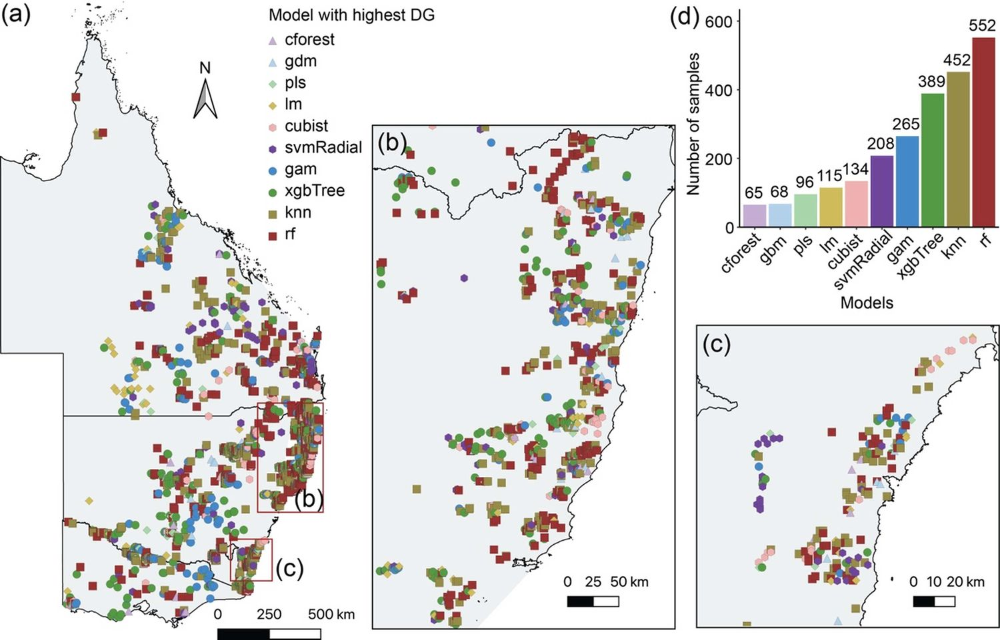
DG paper Fig. 8 — the same construction in Liu et al. (2026) for
tree-biomass in eastern Australia: rf best at 23.6% of locations,
knn 19.3%, xgbTree 16.6%, each with clear geographic
niches.
Paper reference
The DG paper reports mean DG values from −0.57 (lm) to 1.61
(rf) with an unbounded, heavy-tailed distribution — the reason this template
reports the median beside the mean (PDF).
!Quote the median, not the mean
DG has local complexity in its denominator, so points where complexity is near zero
produce extreme ratios. The demo means (17–32) are dominated by a handful of such
points; the medians (0.35–0.51) are the honest summary. The pipeline warns when the
mean and median disagree in sign.
◆How to read this result
DG localises what DSI totals. DSI said xgbTree explains the
most structure overall; DG shows it does so at most — but not all — locations,
and names the second-best model elsewhere.
"No single best model" is the practical claim. The map is the argument for
local model selection: in a real study you might deploy different models in
different regions, an option accuracy metrics never surface.
Rank ≠ magnitude. A model can be locally best at many points while
explaining little in absolute terms — always read the map together with the
summary table before calling a model good.
Deeper thinking: with a dense, near-regular synthetic grid the niches are
diffuse; in the paper's clustered biomass plots they are sharp and geographic
(coastal vs inland). Sparse or clustered sampling makes the map more decisive —
and, below a few multiples of K_GEOC, noisier.
✓Checkpoint
results/dg-summary.csv holds 5 rows with medians between 0.349 and
0.512, and results/dg-optimal-model.csv assigns all 310 test points; the
console reports xgbTree locally best at 32.6%.
Step 5
Sensitivity — is the result an artefact of the settings?
What this step does
Two settings are analyst choices, not properties of the data: the neighbourhood size k
behind Moran's I, and the rule that defines the Q-value strata. This step recomputes DSI
across k ∈ {6, 8, 10, 14, 18, 22} and under an
alternative partition (k-means instead of tree), so the manuscript can state how much the
ranking moves.
Code
terminal
Rscript run-all.R 50
Example output
== Step 5/6 Sensitivity of DSI to measurement settings ========
wrote results/sensitivity-k.csv (30 rows)
k varied over {6, 8, 10, 14, 18, 22}; largest change in theta_probable is 0.00% (cubist at k = 6)
DSI is stable across neighbourhood sizes (all changes below 5%).
wrote results/sensitivity-strata.csv (5 rows)
model ranking agreement across stratification methods: rho = -0.900
wrote results/sensitivity-summary.txt
Demo run
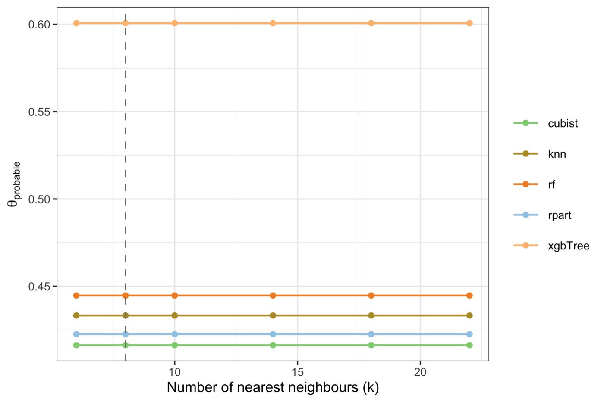
fig10 — θprobable across k ∈ {6,8,10,14,18,22}. The
lines are flat — the ranking does not depend on the neighbourhood size (largest change
< 5%, the paper's robustness bar).Demo run
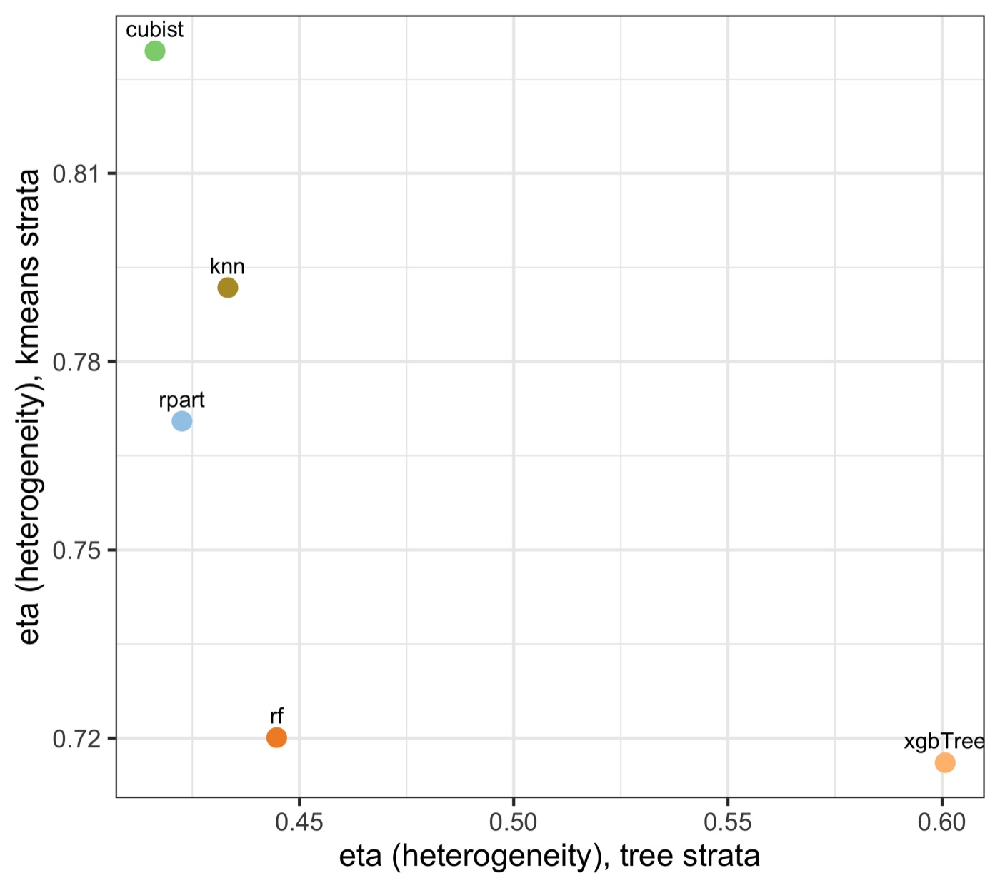
fig11 — ηh under tree vs k-means strata. Points off the diagonal
show the heterogeneity component does shift with the partition (rank agreement
ρ = −0.90).
Paper reference
Section 5.2 of Liu, Song & Yi (2026) compares standard vs. spatial block
cross-validation for rf and finds all DSI components move by less than 5%
(Δθprobable = 3.4%, Δθmin = 4.8%,
Δθmax = 1.3%) — the basis for its robustness claim
(PDF).
◆How to read this result
Neighbourhood size is safe here; report it anyway. θprobable is
invariant to k for models where heterogeneity dominates (ηh does not
use k), which is why the lines are flat. State the chosen k and its stability so
a reviewer cannot suspect cherry-picking.
Stratification is not neutral — this is the honest caveat. Tree and
k-means strata rank the heterogeneity component differently
(ρ = −0.90). Name the stratification rule in the Methods section and,
when rankings differ, report both. Hiding this is the kind of fragility reviewers
probe.
Deeper thinking: the disagreement is larger on the demo than it would be in
a strongly heterogeneous real case, because the synthetic regime term is only one
of several signals. The more the response is genuinely regime-driven, the more
any sensible partition agrees.
✓Checkpoint
results/sensitivity-summary.txt states both findings: stable across k
(all changes below 5%) and partition-dependent across stratification rules
(ρ = −0.900, report both rankings).
3.4 Validation & Interpretation
The whole project converges on one figure: interpretability against accuracy. Everything
else is scaffolding for the moment where the two criteria are placed on the same axes and
disagree.
Demo run
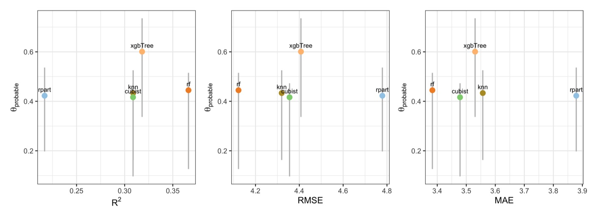
fig05 — θ (vertical span θmin–θmax, point at
θprobable) against R², RMSE and MAE. Models high-left are accurate and
interpretable; models low-right buy accuracy while leaving spatial structure in their
residuals.
Published reference · DSI
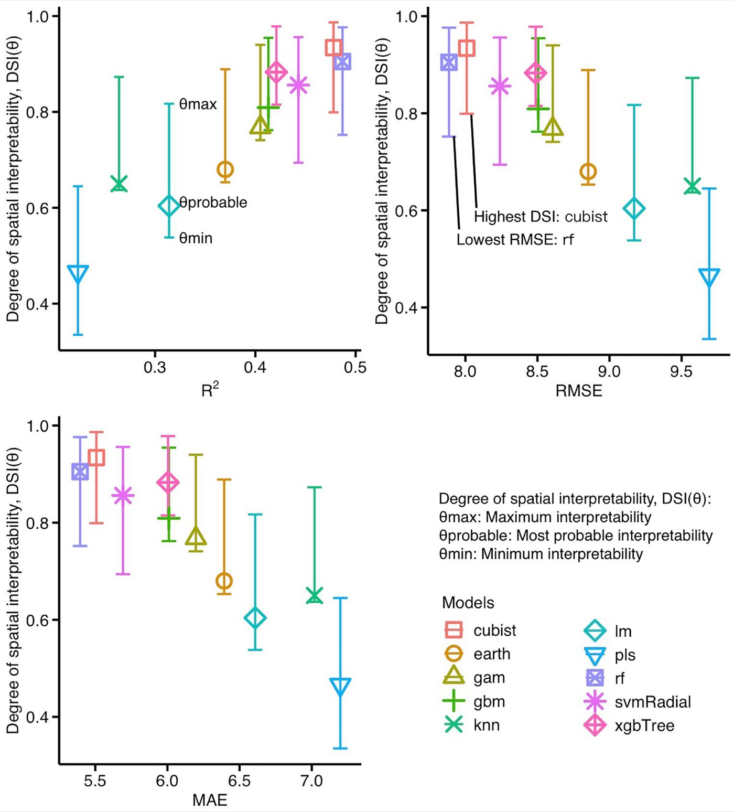
DSI paper Fig. 7 — the published counterpart of demo fig05: DSI(θ) with its
θmin–θmax span against R², RMSE and MAE for the ten Australian
plant-diversity models. The annotations carry the paper's headline: highest DSI is
cubist, lowest RMSE is rf — the two criteria pick different
winners (PDF).Published reference · DG
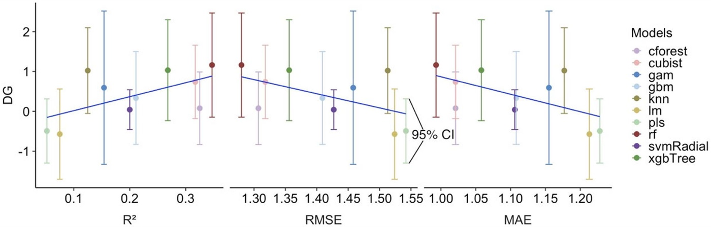
DG paper Fig. 10 — the same dual-criterion reading at the local scale: mean DG
with 95% confidence intervals against R², RMSE and MAE across ten models. Models ranked
highly by accuracy do not automatically rank highly on spatial interpretability — the
trend is positive but far from tight (PDF).
The demo divergence
rf leads
on accuracy (R² 0.366) yet sits fourth of five on θmax (0.515).
xgbTree, second on accuracy, leads interpretability (θprobable
0.601). Rank correlation ρ(R², θprobable) = 0.80 — correlated, not
identical.
The paper divergence
In Liu, Song & Yi
(2026), rf beats cubist on fit (R² 0.487 vs 0.478) yet
cubist has the higher DSI; knn out-fits lm yet DSI
separates them the other way. Same lesson, real data.
◆How to interpret the divergence — several angles
Mechanism (why it happens). Minimising squared error rewards smoothing toward
the local mean, which lowers RMSE while leaving the neighbourhood-scale arrangement
of errors intact. Accuracy scores the magnitude of errors; DSI scores their spatial
organisation. The two can move apart whenever error magnitude and error structure
come apart.
Statistical grounding. The divergence is not a quirk of the data — it follows
from residual diagnostics: structure the model does not capture is transferred to its
residuals (Anselin 1988; Zhang et al. 2023). A low RMSE achieved by averaging
still fails this test.
Decision angle (what to do about it). If the deliverable is a single aggregate
number, accuracy is the right criterion. If the deliverable is a map — a
regional allocation, a targeted intervention — then a model that reproduces spatial
structure is worth a small accuracy cost, and DSI is how you find it.
The negative-η angle. Models below zero on θmin — none in this
five-model demo, but the usual suspects are global linear and additive fits — are the
strongest evidence that accuracy alone misleads: competitive on R² yet actively
distorting spatial pattern. Report them prominently when they occur — they are the
paper's best argument.
What DSI is not. DSI does not replace accuracy and is generally
correlated with it (demo: ρ = 0.80). Its job is to catch the cases where
the two part ways — model selection should read both axes, not swap one for the
other.
Validation summary
Validation item
File / figure
Decision rule
Published-value reproduction
run-all.R test (test-01)
all nine Table-3 values within 0.005 — the code is the published method
θ changes below 5% across k ∈ {6…22} (demo: 0.00%)
Stratification sensitivity
results/sensitivity-strata.csv, fig11
rank agreement reported (demo: ρ = −0.90 → state the rule, report both rankings)
Four decision rules that must hold — or be honestly caveated — before the
results are written up.
◆Reading order for your own run
1) results/dsi-diagnostics.txt — what must be caveated (non-significant δ₀,
negative η, wide θ). 2) results/accuracy-dsi-disagreement.txt — the rank
correlation and the divergent model pair. 3) results/sensitivity-summary.txt —
whether the ranking survives the settings. 4) the figures above.
◆Main finding narrative
The demo recovers the published mechanism on fresh data: accuracy and interpretability
correlate (ρ = 0.80) but pick different winners — rf on R²,
xgbTree on θprobable — and the best-fitting model sits only fourth
of five on θmax. DG then shows the winner is local, not global:
xgbTree is best at only 33% of locations and all five models win somewhere.
The validation quartet shows none of this is an artefact of the sample or the settings —
except the stratification rule, whose effect is quantified (ρ = −0.90) and must
be reported.
4 Adaptation, Writing & Reproducibility
4.1 Port to Your Domain
The pipeline was designed to move between domains without touching the analytical scripts:
the config declares the data, the preparation step builds the analysis table, and everything
downstream is generic. Two published applications illustrate the span:
Domain
Response
Spatial unit
Key adaptation
Plant-diversity prediction (Liu, Song & Yi 2026)
Species richness
0.5° grid cell
19 abiotic predictors; Australian Albers CRS (EPSG:3577); k = 8
Tree-biomass prediction (Liu et al. 2026, DG)
Above-ground biomass
Sample plot
log-transformed response; geocomplexity neighbourhood k = 18
Any point-referenced unit with one numeric response and a set of continuous
predictors fits the data contract of §2.3.
What to edit
config/project-config.R — point INPUT_FILE at your CSV, name
the RESPONSE column, set PROJECTED_CRS to a metric CRS for your
region, and revisit K_MORAN (6–10 dense samples, 10–20 sparse). The single
adaptation point of §2.2.
Optionally list DROP_COLS (IDs, dates) and set
LOG_TRANSFORM_RESPONSE <- TRUE for right-skewed responses
(biomass, income).
Nothing else: run Rscript run-all.R test once (the published-value check
does not depend on your data), then Rscript run-all.R, and read
results/dsi-diagnostics.txt before drafting anything.
!Common pitfalls
PROJECTED_CRS must be in metres — degrees silently distort every KNN
neighbourhood and Moran's I with it. Q-value strata come from the predictors, never
the response: quantile bins of the response drive its own Q towards 1 and make η
meaningless. Residuals are computed on held-out data — training residuals of an overfitted
model produce a spurious η near 1. The Q statistic uses the sum-of-squares form; the
reproduction test locks it, so never edit the metric code without re-running
run-all.R test. And for DG, quote the median — the mean is heavy-tailed by
construction.
4.2 Write the Paper
The manuscript mirrors the pipeline: Methods sections describe the indicator and the
experiment design 1:1 with the scripts, every Results sentence carries a number pulled from
tables/*.tex or results/ so nothing is retyped, and the Discussion is
built on the accuracy–interpretability divergence and the sensitivity sweeps. Section 2
(the indicator) is largely written already, because its definition does not change between
domains — the writing work concentrates in the case study, the Results, and the mechanism of
the divergence.
Manuscript section
Template output
Writing job
Methods
config/project-config.R
define the three spatial characteristics of the response, their residual attenuation ratios (η), and the θ aggregation, with the model list and every parameter quoted from the config, never from memory
order accuracy → DSI → divergence → local (DG) → sensitivity, mirroring the pipeline steps 1:1; every finding sentence carries a number; report δ₀ before any η and caveat non-significant characteristics
Discussion
results/sensitivity-*.csv + figs/fig10–11
explain why accuracy and interpretability diverge (error minimisation rewards smoothing toward the local mean while leaving neighbourhood-scale structure intact); contribution, limitations
Where each manuscript section draws its material from. Fill the abstract from the
tables first — accuracy ranking from table-accuracy, the θ range and leader from
table-theta, the divergence case from table-accuracy-vs-dsi — because
the abstract fixes the argument every other section must serve.
Manuscript skeleton
manuscript outline
1 Introduction — 6 paragraphs, narrowing: background → gap → aim (~1,200 words)
2 The indicator — 2.1 Concept (no formulas) (~1,400 words;
2.2 Calculation process (ALL formulas live here): largely
2.2.1 Spatial characteristics of the response pre-written)
(autocorrelation, heterogeneity,
geocomplexity; significance δ0)
2.2.2 Residual attenuation of each
characteristic (η)
2.2.3 θ aggregation (θ_min, θ_probable, θ_max)
2.2.4 Local degree of interpretability (DG)
3 Case study — study area, data, experiment design — no results (~1,300 words)
4 Results — accuracy → DSI → divergence → local (DG) → (~1,600 words)
sensitivity, mirroring the pipeline steps 1:1;
every finding sentence carries a number;
one interpretive takeaway per subsection
5 Discussion — why the divergence happens, contribution, (~1,200 words)
limitations; no subsection headings
6 Conclusions — 6-7 sentences, each mapping to a contribution (~300 words)
Results-to-manuscript map
Manuscript element
Source file
Shown in
Study-area / response figure
figs/fig01a–c
§3.1 of paper
Accuracy table + scatter
tables/table-accuracy.tex, figs/fig02
§4.1
Main table (DSI per model)
tables/table-dsi.tex, tables/table-theta.tex
§4.2 (≈ published Table 3)
θ-range figure
figs/fig03, figs/fig04
§4.2
Divergence figure
figs/fig05, tables/table-accuracy-vs-dsi.tex
§4.3
DG maps + optimal-model map
figs/fig06–09, tables/table-dg.tex
§4.4
Robustness numbers
results/sensitivity-*.csv, figs/fig10–11
§4.5 / response to reviewers
Every manuscript element traces to one regenerable file.
4.3 Final Reproducibility Package
Everything an editor, reviewer, or reader needs sits in this folder; the three blocks below
are what a submission's data-and-code availability statement should point to.
Code
numbered scripts in R/ + run-all.R + config/project-config.R + tests/
Data
data/reference/dsi-paper-demo-dataset.csv (published demo) — or your raw data in data/raw/
Results
figs/fig01–fig11 (PDF+PNG) + tables/*.tex as the manuscript tables + env/session-info.txt
✓Before claiming reproducible
Rscript run-all.R test passes — the code still reproduces the published
values (change the metric code and this is the tripwire).
Delete results/, tables/, figs/ and
data/derived/, re-run Rscript run-all.R — every number and
figure on this page regenerates (8.1 s).
CRS, k, stratification rule, split fraction and seed are recorded in the manuscript
and match config/project-config.R.
Every finding sentence traces to a file in results/ or
tables/ — none retyped; δ₀ is reported before any η.
env/session-info.txt is included in the deposit.
◆Anticipate the reviewer
Have the answer pre-computed: Why this k? → design justification +
sensitivity-summary.txt. Would a different stratification change the
ranking? → sensitivity-strata.csv, both rankings reported. Is DG's mean
trustworthy given the heavy tail? → the median is already in
dg-summary.csv. Is the test set spatially contaminated? → the DSI paper's
block-CV check moved all components by less than 5%; add block CV for your case or state
the limitation.
Liu H, Song Y, Yi W (2026). Degree of spatial interpretability. IJGIS.
doi:10.1080/13658816.2026.2614335
· PDF
(source of Table 3 and the Fig 1/Fig 6 reference images on this page)
Liu H, Song Y, Yi W, Zhang P (2026). Degree of geocomplexity for diagnosing spatial
pattern loss beyond prediction accuracy. GIScience & Remote Sensing
63(1):2657087.
doi:10.1080/15481603.2026.2657087
· PDF
(source of the DG Fig 8 reference image on this page)